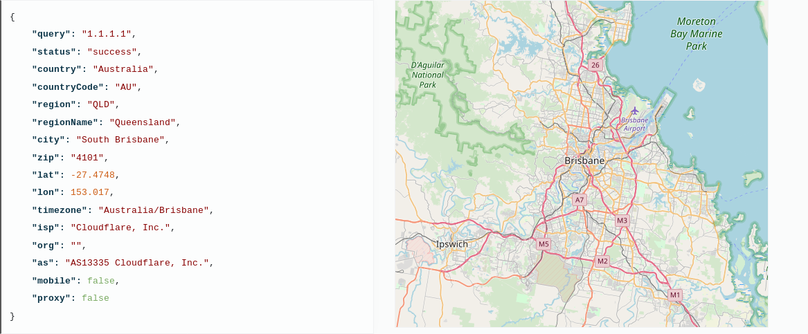
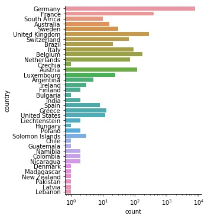
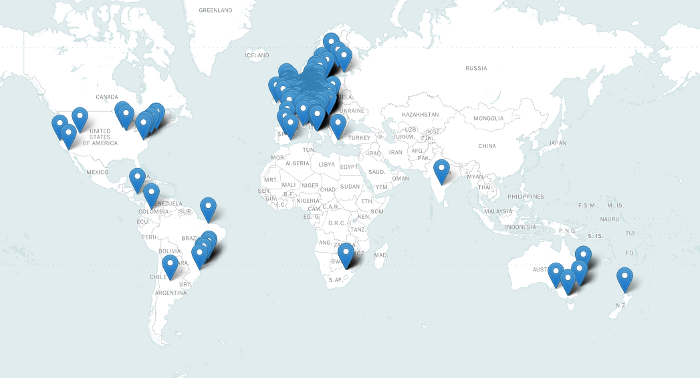
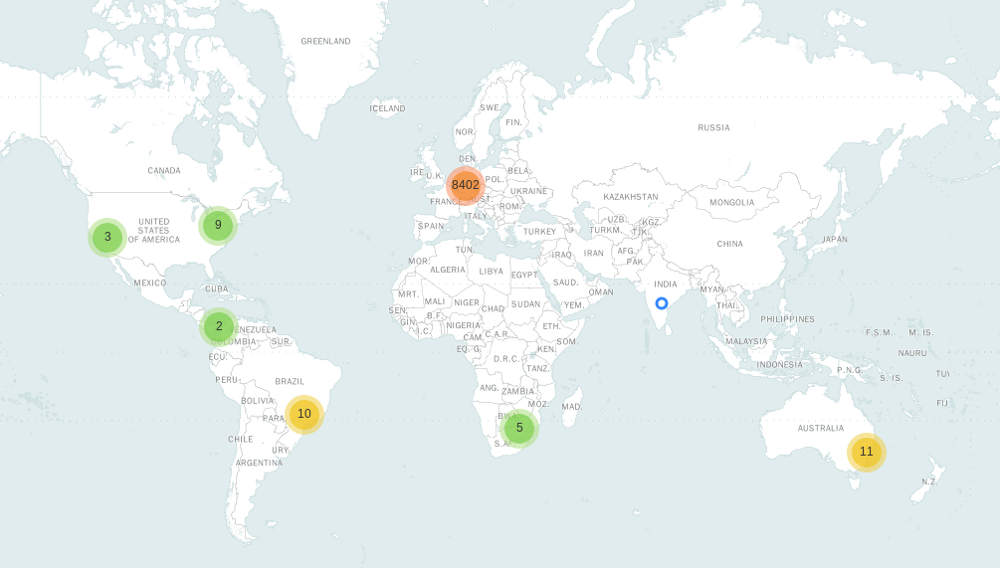

This blog post was originally published in https://adventuresindatachaosblog.wordpress.com/2018/12/22/geolocate-ip-addresses-and-visualize-using-folium/ 22/12/2018.
How you can find location data based on IP addresses
Geographical mapping of an IP address can provide location information (country, city, longitude, latitude, etc.) for you. A large number of geolocation providers could be found on the Internet. Some of them are free (in many cases the provided information is limited), and some of them let you automate your requests. I have chosen the IP Geolocation API (ip-api.com). Free data for non-commercial use is limited to 150 requests/min.
My dataset of IP addresses is contained more than 800 thousand lines so I used pd.read_csv(data, chunk = 1000) to read my data., and I created two new columns because in the original dataset IP and port information was in one column.
for ip_list_chunk in pd.read_csv('ip_list.txt', delim_whitespace = True,
header = None, chunksize = 1000):
ip_list_chunk['IP'] = ip_list_chunk['IP_port'].str.slice(0,-6)
ip_list_chunk['port'] = ip_list_chunk['IP_port'].str.slice(-6)
I created a dictionary (IP_dict) to collect the unique IP addresses and the frequency information, then I formatted it to pandas DataFrame (IP_df) for easier usage. Approximately 9400 unique IP addresses were in the dataset.
I used IP-API to get the location data of the IP addresses, which allows 150 requests/min, so I added some sleep-time to the code to ensure this.
The result of the 1.1.1.1. IP request:

IP = list(IP_df['IP'])
res = pd.DataFrame()
for ip in IP:
url = 'http://ip-api.com/json/'+ip
response = requests.get(url)
dict_jsondata = response.json()
response_df = pd.DataFrame.from_dict(dict_jsondata, orient = 'index')
df_T = response_df.transpose()
res = res.append(df_T)
time.sleep(0.5)
res = res.reset_index()
res.to_csv('ip_location.csv')
From possible output format I used json data because it is like a dictionary in Python, I created a DataFrame and transposed (change the rows to columns) and appended all new requests to it.
Visualisation
At first, a seaborn catplot was created to show the distribution of the countries where the IPs are located.

Distribution of IP locations
The final plan was to put the IPs location (longitude, latitude) data to a map. Several packages (Cartopy, Geopy, Folium, GeoPandas, etc.) are available for Python to visualize geolocation information. Here, Folium (http://python-visualization.github.io/folium/) is used to create HTML maps.
First, a basic map was created with original markers.
m = folium.Map(location = [20, 0], tiles = "Mapbox Bright", zoom_start = 2)
for i in range(0, len(ip_location_noNan)):
folium.Marker([ip_location_noNan.iloc[i]['lat'], ip_location_noNan.iloc[i]['lon']]).add_to(m)
m.save('ip_location.html')

An interactive version of this map can be found here.
Cluster the markers and change the markerts to circle
m2 = folium.Map(location = [20, 0], tiles = "Mapbox Bright", zoom_start = 2)
marker_cluster = MarkerCluster().add_to(m2)
for i in range(0, len(ip_location_noNan)):
folium.CircleMarker(location = [ip_location_noNan.iloc[i]['lat'], ip_location_noNan.iloc[i]['lon']],
radius = 5, fill_opacity = 0.9).add_to(marker_cluster)
m2.save('ip_location2.html')

An interactive version of this map can be found [here] (https://maja0108.github.io/IP-location-analysis//ip_location2.html).
The whole code was published in GitHub (the first part is here and the second part is [here] (https://github.com/Maja0108/IP-location-analysis/blob/master/ip_location_togithub.py)).